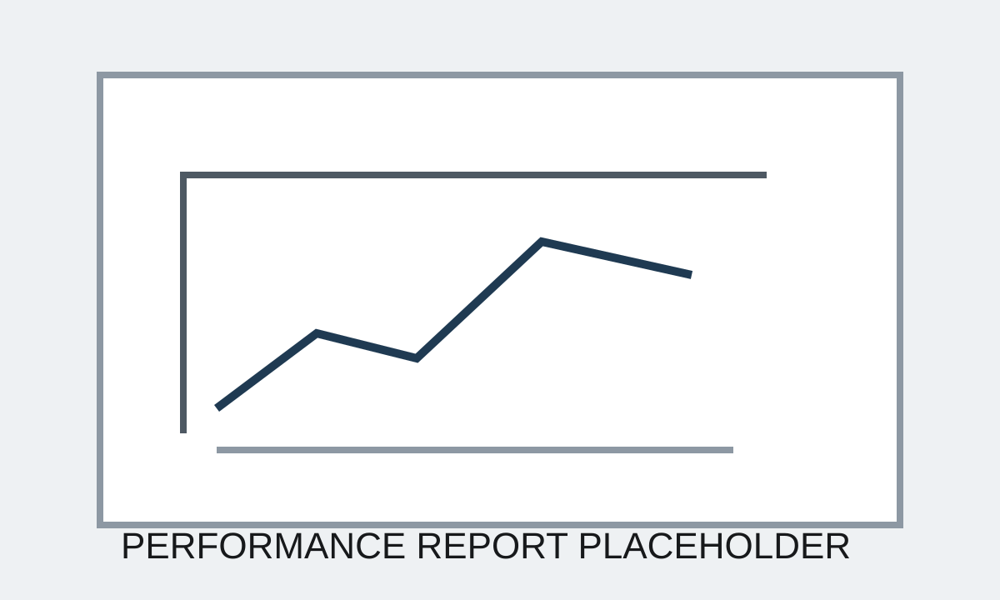

Case Study 03
Propeller Development & Testing
Led propeller development and testing for a 115HP electric outboard platform. Built standardized performance analysis tools to compare propeller and system efficiency across test runs, enabling selection of a new propeller that delivered approximately 13% higher efficiency.
Short Summary
Propeller choices were affecting top-level system behavior, but comparisons were difficult without a repeatable framework. The goal was to make on-water testing more actionable, reduce decisions based on noisy observations, and identify the propeller that delivered the strongest measured efficiency improvement.
The Problem
The team needed an objective method to compare candidate propellers and understand how geometry changes influenced both propeller efficiency and total system performance.
Constraints
- Real-world on-water variability reduced repeatability
- Multiple candidate propeller geometries had to be compared consistently
- Testing had to support quick iteration with suppliers and internal teams
- Selection decisions needed to consider the whole propulsion system, not thrust alone
My Approach
- Structured test conditions and reporting to improve comparison quality
- Built standardized performance analysis tools for post-test review
- Collaborated with software teams and suppliers to align measurements and design changes
- Used iteration loops to narrow promising designs based on measured performance
What I Built
- Automated reporting and comparison tools for propeller test runs
- A repeatable framework for cross-run efficiency review
- A clearer basis for design iteration and supplier feedback
Results
- Supported data-driven propeller selection for the 115HP platform
- Enabled selection of a new propeller that improved efficiency by approximately 13%
- Improved understanding of tradeoffs between propeller geometry and system response
- Created a more credible baseline for comparing future designs
What Went Wrong / Iterations
On-water data always carried some noise from environmental conditions and operational variability. The main iteration was not only around propeller geometry, but around test discipline and analysis so that conclusions stayed grounded in comparable data.
What I'd Do Next
I would expand the framework with tighter environmental normalization and a larger historical comparison set to speed future propeller screening.
Images



Confidentiality Note
Details and visuals have been simplified to respect confidentiality while preserving the technical approach.